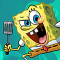
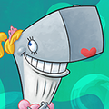

"I'm ready!"
SpongeBob SquarePants (born/created July 14, 1986) is the main character of the Nickelodeon animated series of the same name. He was designed by the former marine biologist, Stephen Hillenburg. Hillenburg based SpongeBob on Bob the Sponge, a character he had created for his educational book "The Intertidal Zone" in the late 1980s. SpongeBob is a childish and joyful sea sponge who lives in a pineapple with his pet snail Gary in the underwater city of Bikini Bottom. He works as a fry cook at the Krusty Krab, a job which he is exceptionally skilled at and enjoys thoroughly. He attends Mrs. Puff's Boating School, and his greatest dream in life is to receive his boating license. Unfortunately, he tenses up whenever he has to drive a boatmobile, and he drives recklessly. SpongeBob is very good-natured and loves to hang out with his best friend Patrick. His teacher is Mrs. Puff and his boss is Mr. Krabs.
"Knowledge can never replace friendship. I prefer to be an idiot!"
Patrick Star is one of the ten main characters in the SpongeBob SquarePants franchise. He is SpongeBob's best friend as well as one of his two neighbors. He is a naïve and overweight pink sea star. He is voiced by Bill Fagerbakke and first appears in the pilot episode, "Help Wanted." He lives under a rock in the underwater city of Bikini Bottom. SpongeBob and Squidward are his two neighbors, and, when viewed on the front side, are to the right of his residence. Both he and SpongeBob like to bother Squidward; though they do it unknowingly and have good intentions. He is the son of Herb and Margie Star and the younger brother of Sam Star.
'We serve food here, sir.!"
Squidward J. Q.Tentacles is one of the ten main characters of the SpongeBob SquarePants franchise.He is SpongeBob's grumpy neighbor and coworker who lives in an Easter Island head. He is an arrogant artist and musician, and his favorite hobbies are painting self-portraits and playing the clarinet. Even though Squidward's name contains the word squid, he is an octopus, not a squid, as confirmed in many interviews and episodes. He has the traits of an octopus—a round bulbous head and rectangular pupils—while a squid has a long triangular head and circular eyes, unlike Squidward. Squids have ten limbs, many more than Squidward. The series' animators believed that giving him eight limbs would be too burdensome and difficult to animate, which is why he is usually depicted with six limbs. Notable exceptions are brief scenes in "Pressure" and "Sold!," in which he has a full set of eight legs. In "Feral Friends," his exact species is identified: a giant Pacific octopus. He is a very cynical, selfish, stick-in-the-mud individual. He works as the cashier at the Krusty Krab, a job he hates. Squidward is frequently annoyed by SpongeBob's loud and cheerful behavior, but he sometimes sticks up for SpongeBob and sees him as a friend on occasion.
"Hello, I like money."
Eugene Harold Krabs more commonly known as Mr. Krabs, is one of the ten main characters in the SpongeBob SquarePants franchise. He is a red crab who lives in an anchor with his daughter, Pearl, who is a young whale. He is the owner and founder of the Krusty Krab restaurant as well as the employer of both SpongeBob and Squidward. Mr. Krabs was designed by Stephen Hillenburg, a marine biology teacher. Hillenburg often received fan letters that asked why Pearl is a whale while her father is a crab. Hillenburg simply wanted each member of the main cast to be a different animal. Mr. Krabs' most prominent trait is his obsession with money, meaning he's also obsessed with wealth, to the point where he occasionally treats money and wealth better than his daughter and employees. Mr. Krabs' only business competition comes from the Chum Bucket, a failing restaurant run by Sheldon Plankton and his wife Karen. Plankton and Karen are constantly scheming to steal the Krabby Patty secret formula that makes the Krusty Krab so successful.

"As far as disasters go, that was really fun."
Pearl Krabs is one of the ten main characters in the SpongeBob SquarePants franchise. She is a young whale who lives in a hollow anchor with her father Mr. Krabs. When Pearl grows up, Mr. Krabs wants her to continue the family business by inheriting the Krusty Krab and becoming its owner. She is voiced by Lori Alan. Pearl was the second main character that Stephen Hillenburg created for the show. He was inspired to design her while working as a supervisor for whale watches at the Ocean Institute. Hillenburg often received letters that asked why Pearl is a whale while her father is a crab. The answer is simple: Hillenburg wanted each member of the main cast to be a different animal. The in-universe difference in species between Pearl and Mr. Krabs has never been addressed in an episode, but the official trivia book states that Pearl takes after her unseen mother, who was also a whale. Stephen Hillenburg was strongly against revealing the identity of Pearl's mom and kept it a secret throughout the show.
"Home is where you're surrounded by critters that care about you."
Sandra Jennifer "Sandy" Cheeks is one of the ten main characters in the SpongeBob SquarePants franchise. She is an American squirrel from the surface who wears a diving suit and lives in an air-filled glass treedome to survive underwater. She is voiced by Carolyn Lawrence. Sandy is a thrill seeker who loves extreme sports and karate. Having come from the state of Texas, she has a Southern drawl and a love for rodeos. She works as a scientist and built both her treedome and air suit herself. She is also a member of the Gal Pals along with Karen, Mrs. Puff, and Pearl.
"Hear me, Krabs! When I discover your formula for Krabby Patties, I'll run you out of business! I went to college!"
Sheldon J. Plankton more commonly known as Plankton, is one of the ten main characters of the SpongeBob SquarePants franchise. He is a planktonic copepod who runs the Chum Bucket restaurant alongside Karen, a waterproof computer who is his sidekick and wife. The Chum Bucket is highly unpopular in Bikini Bottom because it serves chum, a type of bait made from fish meat. Both Plankton and Karen are the two main villains of the franchise. Plankton despises his rival, Mr. Krabs, for running a successful restaurant because his own business rarely gets any customers. He is incredibly jealous of Mr. Krabs and his success. His main goal is to steal Krabs' secret formula for Krabby Patties and running Mr. Krabs out of business. Karen gives him a variety of plans to steal it, but their efforts always end up failing in the process. Plankton is voiced by Mr. Lawrence, one of the show's staff writers. Stephen Hillenburg originally planned for Plankton and Karen to be one-time characters, but Lawrence wrote them into many episodes and proved that they could work as the main villains. Both Plankton and Karen first appear in the episode "Plankton!" Plankton succeeds at stealing the formula in The SpongeBob SquarePants Movie, but his goal of world domination is eventually thwarted by SpongeBob. In "Friend or Foe," it is revealed that Mr. Krabs and Plankton were best friends during their childhood, but a dispute over the Krabby Patty secret formula ended their friendship for real, meaning that Plankton had a part in the creation of the Krabby Patty.
"Plankton: 1% evil, 99% hot gas."
Karen Plankton birthday: December 20 is one of the ten main characters in the SpongeBob SquarePants franchise. She is a waterproof supercomputer who lives in the Chum Bucket laboratory. She is Plankton's wife and sidekick who supplies him with evil plans to steal the Krabby Patty formula. Along with Plankton, she is one of the two main villains of the show. Both Karen and Plankton first appear in the episode "Plankton!" As a computer, Karen is the smartest resident of Bikini Bottom and has a clever, analytical personality. She has two main forms: a big monitor on the wall or a portable wheeled computer. Along with her role as co-owner of the Chum Bucket, she works as the chef and cashier. She rarely has to fulfill these jobs due to the restaurant's unpopularity. Karen was named after Karen Hillenburg, the wife of the show's creator, Stephen Hillenburg. She is voiced by Jill Talley, who is married to SpongeBob's voice actor, Tom Kenny.
"why spongebob,?"
Mrs. Poppy Puff is one of the ten main characters in the SpongeBob SquarePants franchise. She is SpongeBob's teacher at Boating School, where she teaches students how to drive boats like underwater cars. She is a paranoid pufferfish who wears a sailor uniform. She is voiced by Mary Jo Catlett. Teaching and driving are her passions in life. She is talented at both, having successfully taught every student other than SpongeBob how to drive. She and SpongeBob are always on an "endless quest" to get him a driver's license, but due to his reckless boating skills, they never succeed. Her boating school is the only one in the ocean and is very popular. Mrs. Puff's school is attached to a submerged lighthouse and surrounded by a stunt-driving course. Stephen Hillenburg called Mrs. Puff the "most important" character to the show's history, saying that she "saved" the show from not being greenlit. He created her as a new main character in 1997, shortly after he pitched SpongeBob to Nickelodeon. The network gave him a strict order: they would only produce the show if SpongeBob was a kid who went to school. Hillenburg was ready to "walk out" on Nickelodeon because writing SpongeBob as a school-age child went against his creative vision. However, he came up with Mrs. Puff and her Boating School as a compromise, allowing SpongeBob to attend school as an adult. Because Hillenburg began his career as a marine science teacher, Mrs. Puff was a personal character to him, and he channeled many of his experiences as a teacher into her character.
"meow?"
Garold "Gary" Wilson, Jr. is SpongeBob SquarePants's pet sea snail and the most seen pet in the series. He lives with SpongeBob in his pineapple house on 124 Conch Street. Gary is voiced by Tom Kenny and first appears in the pilot episode, "Help Wanted." He is a domesticated house pet with similar mannerisms to a cat, most notably his "meow" sound, as snails are the underwater equivalent to cats in the show. It has been suggested that SpongeBob has had Gary ever since he was a young boy. The episode "Treats!" reveals that Gary was adopted by SpongeBob. In "Plankton's Pet" SpongeBob reveals to have bought Gary at the animal shelter. Gary was created as a minor joke character that would appear in the background of SpongeBob's bedroom, just like SpongeBob's pet scallop Shelley. However, as the series progressed, Gary developed a personality of his own beyond just saying "meow." He was eventually added to the show's Main Model Pack on March 22, 2000 and became one of the ten main characters.